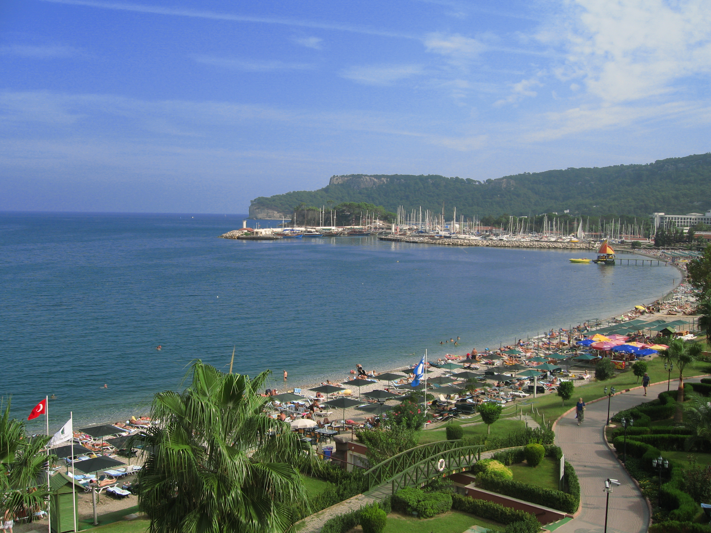
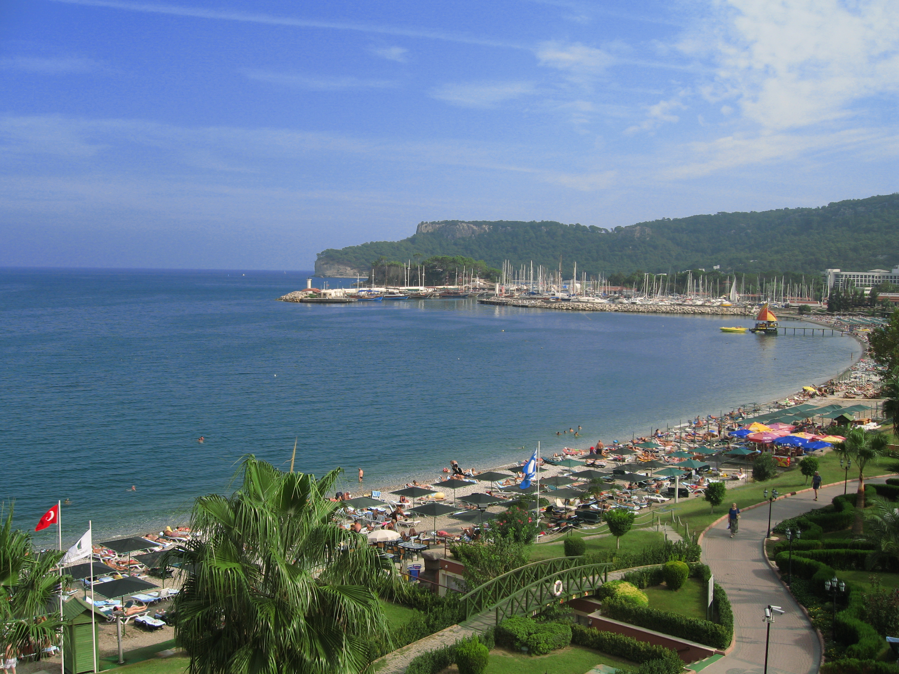
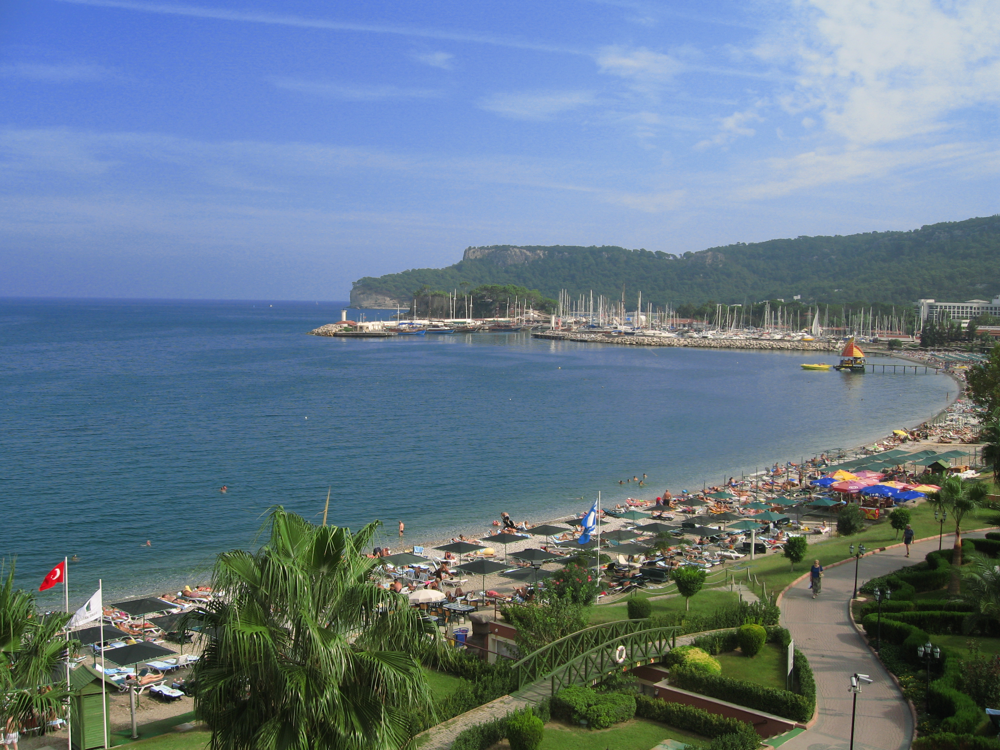

The region where Antalya is located is likened to the "Turkish Riviera" due to its
archaeological and natural beauties. Antalya has the cleanest and longest beaches of the
Mediterranean and is a city where sea, sun, history and nature are in beautiful harmony. We
can say that Antalya, located at the junction of ancient Pamphylia, Pisidia and Lycia, has
the most fertile lands in Anatolia. This city, which has fertile lands and different
cultures, has always kept different cultures, arts and mythologies alive throughout history.
Antalya is one of the most important cities in Turkey in terms of tourism.
Antalya
Antalya is located in the Mediterranean region of southern Turkey. While the average
temperature in winter in Antalya is around 16-17 degrees, the summer months are long and
very hot. The population of Antalya, the fifth most populous city in Turkey, is
approximately 3 million. This population reaches approximately 7 million during the summer
months. The city, which has a coastline of 630 kilometers, also has high mountains suitable
for winter sports. During the summer months, you can ski on the mountain peaks, then go down
to sea level to enjoy the sea and sunbathe. In the city, which has been the capital of many
ancient civilizations, you can visit many historical sites from primitive and ancient times
on the same day.
Opportunities Of Antalya
Antalya, one of Turkey's most important tourism centers, is known for its palm tree-lined
boulevards, internationally award-winning marina, traditional architecture and modern venues
in Kaleici. It hosts Aspendos Opera and Ballet Festival, International Beach Volleyball,
Triathlon, Golf Competitions, Archery, Tennis, Ski competitions, Film Festivals and many
other cultural and artistic events. The city also embraces cultural arts and hosts music,
theater and exhibitions with the Antalya Cultural Center, which was opened in 1995. In
recent years, individuals from these countries are increasingly choosing to migrate to
Antalya due to its warm climate, beautiful landscapes and hospitable culture. Antalya has
become a city where not only five-star hotel tourism but also German, Russian and British
tourists stay. The city, which has daily flights to every point in Europe and many locations
around the world, increases its attractiveness day by day. Antalya is a city with various
opportunities in the field of education. The two states provide opportunities for those
living in the city with a total of 5 universities, 3 of which are private universities.
Beyond luxury resorts and hotels, Antalya offers a lifestyle that combines the charm of the
Mediterranean with the comforts of home, making it an ideal destination for those looking to
move or buy a holiday home. This trend is also reflected in the increase in the number of
foreigners and property owners residing in the region. Antalya consolidated its position as
the leading global tourism destination by becoming the fourth most visited city in the world
with 16 million tourists in 2023. This influx is due not only to its beautiful beaches and
historical sites, but also to the fact that the city is interesting. It appeals to a wide
range of tastes and preferences, making it a universally appealing destination. The city's
infrastructure, rich cultural heritage and diverse recreational activities attract a
constant flow of visitors and new residents from Germany, Russia, the UK and abroad, adding
to its appeal. Antalya's blend of traditional Turkish hospitality with modern amenities
continues to attract international attention and acclaim, strengthening its position as a
cosmopolitan center on the Mediterranean coast.

Nightlife at Antalya
Antalya's nightlife is an important attraction for both tourists and city residents. The
nightlife of Antalya, known as the capital of tourism, can also be described as lively and
colorful. There are many clubs, pubs and night venues suitable for different tastes and
entertainment types in certain streets and districts of Antalya. Especially in the summer
months, these places are extremely popular and can get incredibly crowded.
When it comes to Antalya nightlife, the first thing that comes to mind is undoubtedly
Kaleici. Kaleici, one of Antalya's most popular entertainment districts, is full of taverns,
bars, pubs and clubs. These venues, which are open until the early hours of the morning,
offer various entertainment to their regulars. These entertainments include various dance
shows. Kaleici is famous for its lively nightlife as well as its historical architecture and
fascinating atmosphere. Narrow, winding streets lined with historic buildings create a
unique backdrop for the bustling night scene. While enjoying the night, visitors can enjoy a
mix of traditional and contemporary music, sample local and international cuisine, and
immerse themselves in the rich cultural heritage of the region.
Why your next travel won't be Antalya?
Antalya has become particularly popular among German, Russian, and British tourists, not
only for its five-star hotel tourism but also as a favored location for purchasing property.
In recent years, individuals from these countries have increasingly chosen to migrate to
Antalya, attracted by its warm climate, beautiful landscapes, and welcoming culture. Beyond
its luxury resorts and hotels, Antalya offers a lifestyle that combines the allure of the
Mediterranean with the comforts of home, making it an ideal destination for those looking to
relocate or purchase holiday homes. This trend is reflected in the growing number of foreign
residents and property owners in the area.
In 2023, Antalya solidified its position as a premier global tourist destination, ranking as
the fourth most visited city in the world with a staggering 16 million tourists. This influx
is not only due to its beautiful beaches and historical sites but also to the city's ability
to cater to a diverse range of tastes and preferences, making it a universally appealing
destination.
The city's infrastructure, rich cultural heritage, and array of recreational activities
contribute to its appeal, drawing a steady stream of visitors and new residents alike from
Germany, Russia, the UK, and beyond. Antalya's blend of traditional Turkish hospitality with
modern amenities continues to attract international attention and acclaim, solidifying its
status as a cosmopolitan hub on the Mediterranean coast.
.jpg) 
